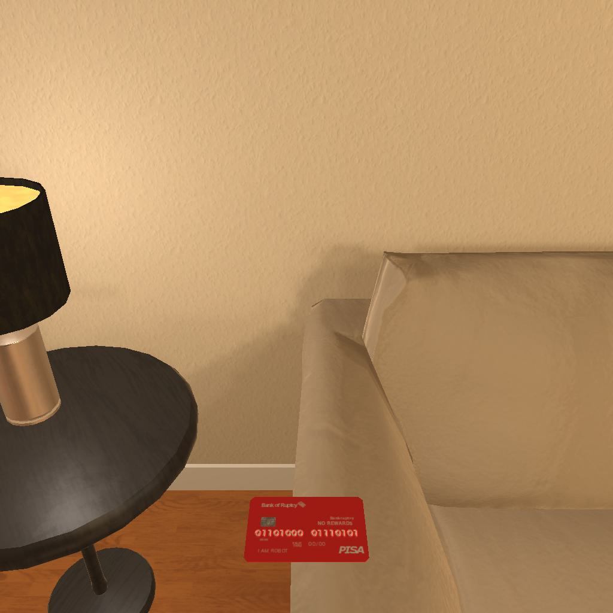

---------------------------------------------------------task: 7---------------------------------------------------------
--------------------------------------------------------------------------------------------------------------------------------------------------------------------
--------------------------------------------------------------------------------------------------------------------------------------------------------------------
Step:--------------------------------------------------------------------------3-------------------------------------------------------------------------------
----------------------------------------
VLM Prompt:
Image1:
**Instruction**
1. Analyze the provided image to identify all visible household objects, focusing on those relevant to the task description "put a creditcard in coffeetable."
2. Use the analysis of the image and the task hint "The agent must find an object of the desired type, pick it up, find the correct location to place it, and put it down there." to answer the question: what is the most reasonable action in the choices for the task description "put a creditcard in coffeetable"?
4. Decide and write the answer using the template: The answer is: (i): , where i is the real number. If there is no desired object in the image, search every place based on **Initial Observation** to find the object. And if no one is exactly correct, choose a similar answer.
**Initial Observation**
You are in the middle of a room. Looking quickly around you, you can see armchair (1-2), dresser (1), garbagecan (1), cabinet (1-4), drawer (1-4), coffeetable (1), sidetable (1), sofa (1)
**Answer Choices**
(1): go to armchair 1
(2): go to armchair 2
(3): go to dresser 1
(4): go to garbagecan 1
(5): go to cabinet 1
(6): go to drawer 1
(7): go to drawer 2
(8): go to cabinet 2
(9): go to drawer 3
(10): go to cabinet 3
(11): go to drawer 4
(12): go to cabinet 4
(13): go to coffeetable 1
(14): go to sofa 1
(15): put creditcard 1 in/on sidetable 1
(16): examine sidetable 1
**Answer**
Let's think step by step by following the instructions.
----------------------------------------
----------------------------------------
Original Response:
First, we analyze the image to identify all visible household objects. We can see a credit card and a sidetable with a lamp on it. The task description is "put a creditcard in coffeetable."
Based on the task hint, the agent must pick up an object of the desired type and put it in the correct location. The image shows that there is already a credit card on the sidetable, which is not the desired location according to the task description.
Given the **Initial Observation**, we know there is a coffeetable present in the room, but it is not visible in the image. Therefore, the agent needs to find and go to the coffeetable.
The most reasonable action from the choices provided for the task description would be to go to the coffeetable and then put the credit card there. However, the option to pick up the credit card is not provided, so we will select the action that involves going to the coffeetable.
The answer is: (13): go to coffeetable 1.
----------------------------------------
----------------------------------------
>>> Refine Original VLM Response and Get Pure Action: go to coffeetable 1
----------------------------------------
-----------------------------------------------------------------
Running time: 13.557125091552734 seconds
Total Money: 1.9026599999999998
-----------------------------------------------------------------
-----------------------------------------------------------------
Text Observation:You arrive at loc 12. On the coffeetable 1, you see a box 1, a remotecontrol 1, and a lightswitch 1.
-----------------------------------------------------------------
UNSUCCEED